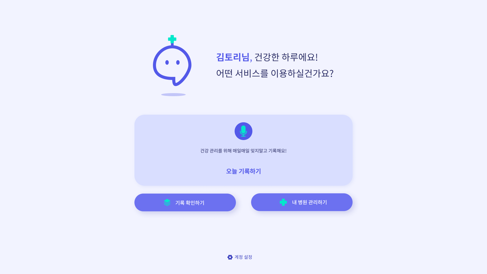

2022
바디토리: 건강기록 및 병원추천 AI 웹 서비스
음성인식을 통해 매일 나의 몸 건강 상태를 간편하게 기록하고, 기록된 증상을 기반으로 병원을 추천해주는 건강관리 웹 서비스입니다.
또한, 병원과의 연계를 통해 손쉬운 기록 공유 및 진료내역 관리도 가능합니다.

사용기술
- TypeScript, JavaScript, Next.js, Flask
- Recoil, React-Query, styled-components, React Hook Form, Framer Motion
- PlanetScale, Prisma, CloudFlare